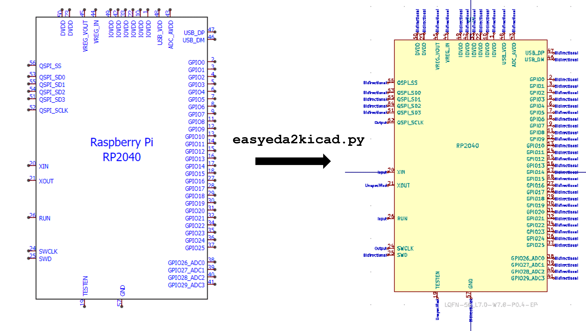

EasyEDA to KiCad Converter

Overview
When I design PCBs in KiCad, I source most of my components from LCSC for JLCPCB assembly. The problem is that LCSC hosts its component models in EasyEDA's proprietary format, not in KiCad's native format. Manually recreating symbols, footprints, and 3D models for every part is tedious and error prone.
easyeda2kicad.py solves this. It is a zero-dependency Python CLI tool that converts any LCSC component (symbol, footprint, and colored 3D model) into KiCad library files with a single command.
Why a Fork
The upstream project by uPesy Electronics is mature and well maintained (v1.0.1,
446 commits, 23 releases). I forked it after EasyEDA's API started rejecting
requests made with the default Python user-agent string. My fork adds a
browser-like User-Agent header and a Referer header to prevent these
rejections.
How I Use It
My personal KiCad library, gs-kicad-lib, calls easyeda2kicad as a CLI
subprocess. When I need a new LCSC component, I run:
python -m easyeda2kicad --full --lcsc_id=C2040 --output=gs-kicad-lib
This fetches the component data from EasyEDA's API, parses their proprietary shape format, and exports a KiCad symbol, footprint, and 3D model into my library. From there, every KiCad project on my machine can reference the part.
The tool also supports batch processing. I can pass multiple LCSC IDs in one invocation to populate a full BOM at once.
Technical Details
- Zero runtime dependencies. The tool uses only Python's standard library
(
urllib,json,ssl,argparse). This lets it run inside KiCad's bundled Python, which has limited pip access on some platforms. - 3D model conversion. OBJ files from EasyEDA are converted to VRML
(
.wrl) with proper material colors. STEP files pass through unchanged. - API response caching. The
--use-cacheflag stores fetched component data in.easyeda_cache/, so repeated runs for the same part do not hit the API.
Repository
github.com/georgesleen/easyeda2kicad.py
Upstream: github.com/uPesy/easyeda2kicad.py